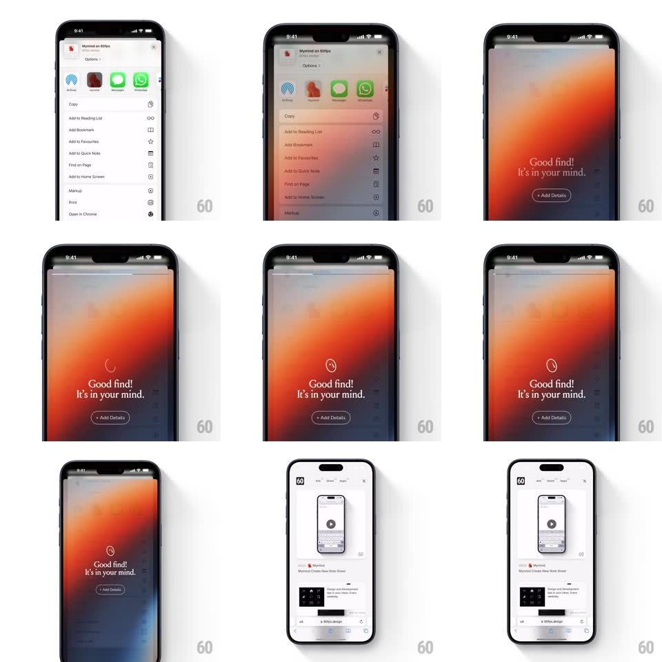

Media
Frame-by-frame

Rebuild this interaction 1:1: mymind's share-extension confirmation - saving from the iOS share sheet fades in a full-screen warm gradient interstitial ("Good find! It's in your mind.") with a rotating badge and an "Add Details" pill, then dissolves back to the app.

Rebuild this interaction 1:1: mymind's share-extension confirmation - saving from the iOS share sheet fades in a full-screen warm gradient interstitial ("Good find! It's in your mind.") with a rotating badge and an "Add Details" pill, then dissolves back to the app.
## Integration
Integration: stack-agnostic spec - springs given as stiffness/damping, timed motions as duration + curve; map every value to your framework and animation library of choice.
## Scene
iOS share sheet ("Mymind on 60fps", AirDrop/app row, action list) over Safari; behind it a blurred warm gradient (coral to orange to violet) rises. The interstitial: centered mymind flame/spinner glyph, "Good find!" serif headline, "It's in your mind." subline, outlined "+ Add Details" pill.
## Motion spec
Pattern: blurred gradient celebration interstitial.
- On save: the share sheet slides away and the gradient fades in from black (350ms), already blurred (radius ~24px) and slightly scaled (1.05 -> 1, 500ms) so it breathes in.
- The flame glyph spins once (rotate 0 -> 360, 700ms) as the copy fades up (headline then subline, stagger 120ms, rise 12px).
- "+ Add Details" fades in last (200ms delay); the whole interstitial holds ~1.8s.
- It dismisses by crossfading back to the underlying app (300ms), no slide.
## Calibration
- The gradient is the same warm field throughout - it never re-renders; blur and scale do the motion.
- The interstitial fully covers the share sheet's sheet area and the status bar region.
## Reduced motion
Simple fade in/out; glyph static.
## Don't miss
- "Add Details" is an outline pill, white text, no fill - quiet next to the loud gradient.
- The glyph spin is a single revolution, not a looping loader.